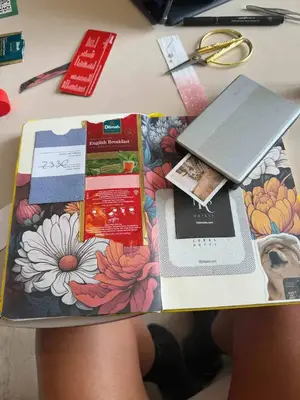

¡Hola! Soy Maggie. Vivo en la Patagonia, un rincón que me inspira en cada viaje, paseo en bici y caminata con mi perro negro.
De ese entorno y del juego con papeles, ilustraciones y stickers nacen los productos digitales de esta tienda.
Ideas simples listas para descargar,
imprimir e intervenir, pensadas para que disfrutes del hermoso proceso de crear algo con tus propias manos.
Su trabajo nace entre planos, fotografía y pruebas de materiales reales para que cada recurso digital tenga utilidad práctica y una estética cuidada.
Durante años viví entre trabajos full time y horas de estudio, dejando poco espacio para mi lado creativo.
Este año decidí volver a conectar con esa parte: bajar el ritmo, recuperar tiempo para experimentar y empezar a compartir lo que hago.
Crear sin producir en masa
Die Brucke nace desde la idea de crear sin seguir una única temática o estructura fija.
No busco producir en serie ni trabajar por cantidad, sino desarrollar proyectos que surjan desde la inspiración, la curiosidad y las ganas de probar cosas nuevas.
Lo digital + lo analógico
Me inspira mezclar mundos:
los años 90, lo vintage, lo editorial, las texturas, lo artesanal y lo analógico, combinado con herramientas digitales, ilustración y diseño contemporáneo.
Cada proyecto es una combinación de materiales, ideas y procesos distintos.
Hoy
Die Brucke es un espacio creativo en constante transformación.
Un lugar donde las ilustraciones, los imprimibles y los objetos digitales se convierten en proyectos reales para crear, intervenir y compartir.
Vida y proceso creativo.
No creo en la perfección ni en seguir siempre una misma línea.
Me interesa experimentar, editar, combinar elementos y dejar que cada idea tome su propia forma.
Crear, para mí, es volver a encontrar tiempo para imaginar.

Sesiones de ideación y selección de referencias.Curaduría de materiales y limpieza de estilo.Producción final de recursos para publicación.